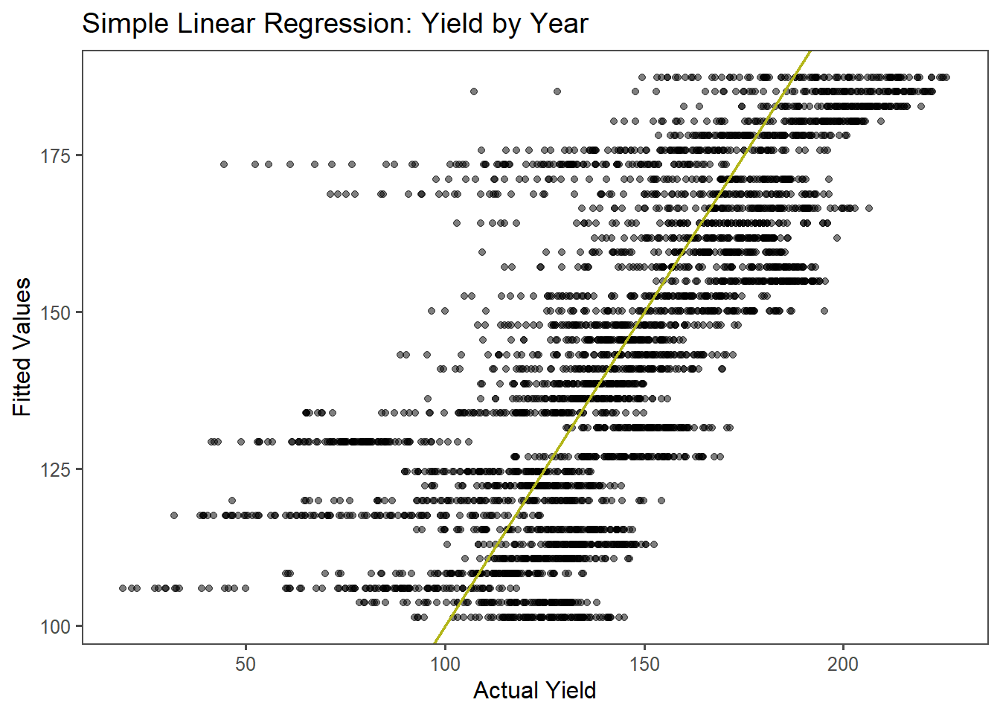

Chapter 6 Regression Models
6.1 Introduction
In this project, we explored regression models for analyzing temperature and crop yield in Iowa, USA. We utilized PRISM temperature data and USDA National Agricultural Statistics Service (NASS) yield data for corn and soybean crops. We first explored temperature trends in Winneshiek County, Iowa for an introduction to regression models. In the second portion of the project, we analyzed corn yield specifically within Winneshiek County and across all Iowa counties. We also investigated soybean yields across all Iowa counties.
We used regression analyses to address the following questions:
Is there a significant time trend for corn yield in Winneshiek county?
Is there evidence for slowing corn yield growth over time in Winneshiek county?
What is the relationship between average summer maximum temperature and corn yields in Winneshiek county?
What is the relationship between average summer maximum temperature and corn yields across all Iowa counties for a single year?
What is the impact of adding particular covariates, such as county code, to a regression model for corn yield in Iowa?
Is there a spatial pattern in corn yield across all Iowa counties over time?
What is the relationship between average summer maximum temperature and soy yields across all Iowa counties for a single year?
6.3 Data Acquisition: PRISM Temperature Data
Dr. Nathan Mueller provided previously acquired PRISM data for class use.
#Load PRISM daily max temperature
#Dimensions: counties x days x years
prism <- readMat("dataRegression/prismiowa.mat")
Data Cleaning
#Assign dimension names to tmax matrix
dimnames(prism$tmaxdaily.iowa) <- list(prism$COUNTYFP, 1:366, prism$years)
#Convert 3d matrix into a data frame
tmaxdf <- as.data.frame.table(prism$tmaxdaily.iowa)
#Relabel columns within data frame
colnames(tmaxdf) <- c("countyfp","doy","year","tmax")
tmaxdf <- tibble(tmaxdf)6.4 Analyses: Temperature trends in Winneshiek County, Iowa
Summer temperature trends
#Save doy and year as numeric variables
tmaxdf$doy <- as.numeric(tmaxdf$doy)
tmaxdf$year <- as.numeric(as.character(tmaxdf$year))
#Create data frame for Winneshiek County summer mean max temp
winnesummer <- tmaxdf %>%
filter(countyfp==191 & doy >= 152 & doy <= 243) %>%
group_by(year) %>%
summarize(meantmax = mean(tmax))
#Fit linear model for Winneshiek County mean summer max temp by year
lm_summertmax <- lm(meantmax ~ year, winnesummer)
tidy(summary(lm_summertmax))

6.6 Analyses and Results: Corn Yield in Winneshiek County, Iowa
6.6.1 Question A: Is there a signicant time trend for corn yield?
Simple Linear Regression - Yield by Covariate: Year
#Extract Winneshiek County corn yields
winne_yields <- cornyields %>%
filter(county_ansi == 191)
# Fit a model for yield as the response (y) and year as predictor (x)
winne_timeLM <- lm(yield ~ year, data = winne_yields)
tidy(summary(winne_timeLM))
#Add fitted values from linear model to data frame
winne_yields$fitted_l <- winne_timeLM$fitted.valuesWith a p-value of 1.77e-13 and less than \(\alpha\) = 0.05, we reject the null hypothesis \(H_0:\beta_1\) = 0. We have enough evidence to suggest there is a significant time trend and a positive linear relationship between year and yield. There is an estimated 2.457 bu/acre increase in corn yield with each increasing year. 75.51% of the variation in corn yield is explained by the regression on year.
6.6.2 Question B: Is there evidence for slowing yield growth?
Quadratic Regression - Yield by Covariates: Year,Year2
# Create column for year^2
winne_yields$yearsq <- winne_yields$year^2
#Fit quadratic time trend with yield(y) and year and year^2 as covariates(x)
quad_timeLM <- lm(yield~year + yearsq, data = winne_yields)
tidy(summary(quad_timeLM))
#Add fitted values from the quad model to data frame
winne_yields$fitted_q <- quad_timeLM$fitted.valuesThere is not strong evidence to suggest there is slowing yield growth over time. The p-value associated with the overall quadratic regression on year and year2 is 2.311e-12 and less than \(\alpha\) = 0.5, suggesting there is a relationship between yield and one of the covariates in the model. However, the p-value(s) for each variable independently, year (p-value = 0.745) and year2 (p-value = 0.723), are greater than \(\alpha\) = 0.5. Given the results of the regression on year alone suggest a linear relationship between yield and year, the linear year term is likely contributing to overall model significance. Thus, this implies the quadratic year2 term is not applicable.
Furthermore, the R-squared values between the linear model and quadratic model with regressor(s) year and/or year2 are comparable at 75.51% or 75.59%, respectively. However, with reference to the adjusted R-squared value, 74.31% of the variation in yield is explained by the quadratic regression on year (and year2); this is slightly less the variation in yield explained by the regression on year alone (75.51%). These pieces of information suggest the higher order model, with adding in year2, does not provide greater predictive ability.
6.6.3 Question C: What is the relationship between average summer maximum temperature and corn yields?
SLR - Yield by Covariate: Average Summer Maximum Temperature
#Add average summer Tmax to winne_yield data
winne_summer_yield <- left_join(winne_yields,winnesummer, by = "year")%>%
filter(!is.na(meantmax))
#Fit a model for yield(y) and average summer maximum temperature(x) alone
winne_tempLM <- lm(yield~meantmax, data=winne_summer_yield)
tidy(summary(winne_tempLM))
#Add fitted values to data frame
winne_summer_yield$fitted_2 <- winne_tempLM$fitted.valuesWith a p-value of 0.2902 and greater than \(\alpha\) = 0.05, we fail to reject the null hypothesis \(H_0:\beta_1\) = 0. We do not have sufficient evidence to suggest there is a linear relationship between average summer maximum temperature and yield. 3.1% of the variation in corn yield is explained by the regression on average summer maximum temperature alone.
Multiple Regression - Yield by Covariates: Average Summer Maximum Temperature, Year
#Add summer Tmax^2 to winne_summer_yield
winne_summer_yield$meantmaxsq <- winne_summer_yield$meantmax^2
#Fit a model for yield(y) with covariates(x): average summer max temp and year
temp_yearLM <- lm(yield~meantmax + year, data=winne_summer_yield)
tidy(summary(temp_yearLM))
#Add fitted values from model to data frame
winne_summer_yield$fitted_2a <- temp_yearLM$fitted.valuesWith a p-value of 1.01e-11 and less than \(\alpha\) = 0.05, we reject the null hypothesis \(H_0:\beta_1 = \beta_2\) = 0. We have evidence of a positive linear relationship between year and yield, when average summer max temp is held constant. There is an estimated 2.514 bu/acre increase in corn yield with each increasing year, holding all else constant. 73.18% (Adjusted R-squared) of the variation in corn yield is explained by the regression on average summer maximum temperature and year. Thus, adding year to the original model analyzing yield by average summer maximum temperature improves model predictive ability.
Quadratic Regression - Yield by Covariates: Average Summer Max Temperature, Max Temperature2
#Fit a model for yield with covariates: average summer max temp and max temp^2
quad_tempLM <- lm(yield~meantmax + meantmaxsq, data=winne_summer_yield)
tidy(summary(quad_tempLM))
#Add fitted values from model to data frame
winne_summer_yield$fitted_2b <- quad_tempLM$fitted.valuesIn prior analyses, we found there was not sufficient evidence of a linear relationship between yield and average summer max temp (p-value = 0.2902, R2 = 3.1%). However, in adding the quadratic term to the model (Tmax2), 19.84% (Adjusted R-squared) of the variation in corn yield is explained by the regression on average summer max temp and average summer max temp squared. The quadratic model, therefore, describes greater variability in yield above and beyond the regression on average summer max temp alone. Furthermore, the p-value from the F-statistic for the quadratic model overall is 0.007887 and less than \(\alpha\) = 0.05, whereas the p-value from the linear model F-statistic is 0.2902. This suggests the higher order model serves as a better predictive model.
When looking at the plot of yield by average summer maximum temperature, we can see there is high variability. However, the curvature of the line for the fitted quadratic model suggests corn yield increases with temperature until reaching an optimal temperature for plant growth, then declines with temperatures exceeding the optimal temperature.
6.7 Analyses and Results: Corn Yield in all Iowa Counties
6.7.1 Question D: Is there a relationship between temperature and yield across all counties in 2018?
SLR - Yield by Covariate: Average Summer Max Temperature
#Fit a linear model with yield (y) and average summer Tmax (x)
yield_2018LM <- lm(yield~meantmax, data=countytmax2018)
tidy(summary(yield_2018LM))
#Add fitted values from model to data frame
countytmax2018$fitted_l <-yield_2018LM$fitted.values
#Plot yield(y) by average summer maximum temperature (x)
# ggplot(aes(x = meantmax, y = yield), data = countytmax2018) +
# geom_point(shape = 1) +
# geom_line(mapping = aes(x=meantmax, y=fitted_l))+
# theme_few() +
# labs(x = expression("Average Summer Maximum Temperature ("*degree*C*")"), y = "Yield (Bu/Acre)", title = "Corn Yields across Iowa Counties in 2018")2.7% of the variation in corn yields is explained by a simple linear regression on average summer max temp across all Iowa counties in 2018. With a p-value of 0.0631 and greater than \(\alpha\) = 0.05, we fail to reject the null hypothesis \(H_0:\beta_1\) = 0. We do not have sufficient evidence to suggest there is a linear relationship between yield and average summer max temp across all Iowa counties in 2018.
QR - Yield by Covariates: Average Summer Max Temperature, Max Temperature2
#Add Tmax^2 to data frame
countytmax2018$meantmaxsq <- countytmax2018$meantmax^2
#Fit a quadratic model with yield (y) and average summer Tmax and Tmax^2
yield_2018_QR<- lm(yield~meantmax + meantmaxsq, data=countytmax2018)
tidy(summary(yield_2018_QR))
#Add fitted values from model to data frame
countytmax2018$fitted_q <-yield_2018_QR$fitted.values
#Plot yield(y) by average summer maximum temperature (x)
# ggplot(aes(x = meantmax, y = yield), data = countytmax2018) +
# geom_point(shape = 1) +
# geom_line(mapping = aes(x=meantmax, y=fitted_q))+
# theme_few() +
# labs(x = expression("Average Summer Maximum Temperature ("*degree*C*")"), y = "Yield (Bu/Acre)", title = "Corn Yields across Iowa Counties in 2018")While we did not find enough evidence of a linear relationship between average summer max temp and yield across all Iowa counties in 2018 (p-value 0.0631 > \(\alpha\)), there is evidence of an overall significant quadratic temperature trend (p-value = 0.001736). 11.24% of the variation in corn yield is explained by the quadratic regression on mean max temperature and mean max temperature squared, across all Iowa counties in 2018.
6.7.2 Question E: What is the impact of certain covariates to the corn yield regression model?
#Combine county and temperature data
yearly_co_temp <- tmaxdf %>%
group_by(countyfp,year)%>%
filter(doy >= 152 & doy <= 243) %>%
summarize(meantmax = mean(tmax))
co_yearly_join <- left_join(yearly_co_temp, corn_yields, by= c('countyfp','year'))%>%
filter(!is.na(yield))
#Add Tmax^2 to data frame
co_yearly_join$meantmaxsq <- co_yearly_join$meantmax^2SLR - Yield by Covariate: Year
SLR_LM <- lm(yield~ year, data = co_yearly_join)
tidy(summary(SLR_LM))
co_yearly_join$fit_SLR <- SLR_LM$fitted.values
Quadratic Regression - Yield by Covariates: Average Summer Maximum Temperature, Max Temperature2
QR_LM <- lm(yield~ meantmax+ meantmaxsq, data = co_yearly_join)
tidy(summary(QR_LM))
co_yearly_join$fit_QR <- QR_LM$fitted.valuesMultiple Regression - Yield by Covariates: Average Summer Maximum Temperature, Max Temperature2, Year
# Fit multiple regression yield by Average Summer Maximum Temperature, Max Temperature^2, Year
MR_LM <- lm(yield~ meantmax+ meantmaxsq+ year, data = co_yearly_join)
tidy(summary(MR_LM))
co_yearly_join$fit_MR <- MR_LM$fitted.valuesPanel Regression - Yield by Covariates: Average Summer Maximum Temperature, Max Temperature2, Year, County code
#Fit a panel regression
panelLM <- lm(yield~ meantmax+ meantmaxsq+ year+countyfp, data = co_yearly_join)
tidy(summary(panelLM))
co_yearly_join$fit_panel <- panelLM$fitted.values
In order to assess the applicability of the panel regression model (later referred to as model D), I ran the following models for comparison: a) a simple linear regression with yield by year, b) a quadratic regression with yield by average summer max temp and average summer max temp2, and c) a multiple regression with yield by year, average summer max temp, and max temp2. For model A, 52.41% of the variability in corn yield is explained by the regression on year. For model B, 19.43% (adjusted R2) of the variation in corn yield is explained by the quadratic regression on average summer max temperature. For model C, 65.65% (adjusted R2) of the variation in yield is explained by the regression on the model covariates. Finally, for model D, 71.29% (adjusted R2) of the variation in corn yield is explained by all covariates in the model including county code.
The following list includes the p-values associated with the coefficients for average summer max temperature and average summer max temp2, while holding all else constant, in the models:
Model B: Average Max Temp (p-value = <2e-16), Max Temp2 (p-value = <2e-16)
Model C: Average Max Temp (p-value = <2e-16), Max Temp2 (p-value = <2e-16)
Model D: Average Max Temp (p-value = <2e-16), Max Temp2 (p-value = <2e-16)
As evidenced by the information above, the significance of the temperature coefficients remained consistent across models. In the case of the panel regression, when incorporating county ID into the model, it could be that the coefficients for temperature remained consistent given counties within Iowa may experience broadly similar weather (and thus temperature regimes).
6.7.3 Question F: Is there a spatial pattern in corn yield across all Iowa counties over time?
#Simplify data by only mapping yield data from one year
cornyield_2017 <- corn_yields %>%
filter(year==2017) %>%
dplyr::select(county_name, yield, countyfp)
#Combine yield and spatial county data
co_yields <- merge(counties, cornyield_2017, by.x = "name", by.y = "county_name", all.x=TRUE)
#Map yield by county
mapview(co_yields, zcol= 'yield', layer.name="2017 Corn Yield - Bu per Acre")Viewing the map of 2017 corn yields across Iowa counties (especially in tandem with the maps below), there appears to be a spatial pattern where corn yields are generally lowest in southern Iowa counties. Furthermore, specifically for the 2017 year, there appears to be higher corn yields in the eastern portion of the state versus the western side.
#Create data frame with corn yield from last 9 years
cornyield_time <- corn_yields %>%
filter (year %in% c(1985,1990,1995,2000,2005,2010,2015,2020,2021)) %>%
dplyr::select(year, county_name, yield, countyfp)
#Join to counties spatial data
co_yields_time <- merge(counties, cornyield_time, by.x="name", by.y="county_name", all.x=TRUE)
#Use facet wrap by year to show corn yield over the last 9 years
ggplot(na.omit(co_yields_time), aes(fill = yield)) + geom_sf() +
scale_fill_viridis() + theme_few() +
facet_wrap( ~ year, nrow = 3) +
theme(axis.text.x = element_text(
color = "black",
size = 7,
angle = 30,
vjust = .8,
hjust = .8
)) +
theme(axis.text.y = element_text(size = 8))+
labs(title="Iowa County Corn Yields Over Time", fill="Yield (Bu/Acre)")+
theme(legend.position = "right",
legend.key.width = unit(5, "mm"), legend.title=element_text(size=10))The map(s) above shows corn yields across Iowa counties in 5 year intervals, in addition to the two most recent years with yield data. Broadly, this map is supportive of earlier findings from our analyses, where corn yields have generally increased with time. Spatially, the map indicates that south-central Iowa counties produce lower corn yields consistently over time, in comparison to other counties.
6.8 Analyses and Results: Soy Yield in all Iowa Counties
6.8.1 Question G: Is there a relationship between temperature and yield across all counties in 2018?
Cross-section analysis of soy yields across all Iowa Counties in 2018
#Rename county_ansi to countyfp
soy_yields <- soyyields %>%
rename('countyfp'= county_ansi)
#Save countyfp as factor
soy_yields$countyfp <- as.factor(soy_yields$countyfp)
#Filter for 2018 yields only
county2018_soy <- soy_yields %>%
filter(year==2018)
#Combine average summer max temperature with county yield data for 2018
soytmax2018 <- inner_join(county2018_soy, tmax2018, by='countyfp')SLR - Soy Yield by Covariate: Average Summer Max Temperature
#Fit a linear model with soy yield (y) and average summer Tmax (x)
soy_2018LM <- lm(yield~meantmax, data=soytmax2018)
summary(soy_2018LM)
#Add fitted values from model to data frame
soytmax2018$fitted_l <-soy_2018LM$fitted.valuesWith a p-value of 0.189 and greater than \(\alpha\) = 0.05, we fail to reject the null hypothesis \(H_0:\beta_1\) = 0. We do not have sufficient evidence to suggest there is a linear relationship between soy yield and average summer max temp across all Iowa counties in 2018. 0.78% of the variation in soy yields is explained by a simple linear regression on average summer max temp across all Iowa counties in 2018.
QR - Soy Yield by Covariates: Average Summer Max Temperature, Max Temperature2
#Add Tmax^2 to data frame
soytmax2018$meantmaxsq <- soytmax2018$meantmax^2
#Fit a quadratic model with soy yield (y) and average summer Tmax and Tmax^2
soy_2018_QR<- lm(yield~meantmax + meantmaxsq, data=soytmax2018)
summary(soy_2018_QR)
#Add fitted values from model to data frame
soytmax2018$fitted_q <-soy_2018_QR$fitted.valuesSimilar to as observed with corn yields, soy yields in response to average summer max temp are better predicted by a quadratic regression. The p-value from the F-statistic for the linear model is 0.1893 and greater than \(\alpha\) = 0.5, while the p-value for the overall quadratic model F-statistic is 0.00274 < \(\alpha\). 10.02% (Adjusted R2) of the variation in soy yield is explained by the quadratic regression on mean max temperature and mean max temperature2, across all Iowa counties in 2018. By adding the quadratic term to the model, the R2 value increased from 0.78% in the linear model to 10.02% with the quadratic regression. A similar temperature trend is present in soy yields as to corn yields. There is high variability in the data and the curvature of the fitted line for the quadratic model suggests increasing yield with increasing temperatures, until reaching a peak temperature for plant growth, then declining at temperatures exceeding optimal temperatures. One final note: overall, in bushels/acre units, corn yield was higher that soy yield in 2018.

6.9 References
Data Retrieval R Packages
Bengtsson, H. (2018). R.matlab: Read and Write MAT Files and Call MATLAB from Within R. R package version 3.6.2. https://CRAN.R-project.org/package=R.matlab
Potter, NA. (2019). rnassqs: An R package to access agricultural data via the USDA National
Agricultural Statistics Service (USDA-NASS) âQuick Statsâ API. Journal of Open Source Software,
4(43), 1880. https://doi.org/10.21105/joss.01880